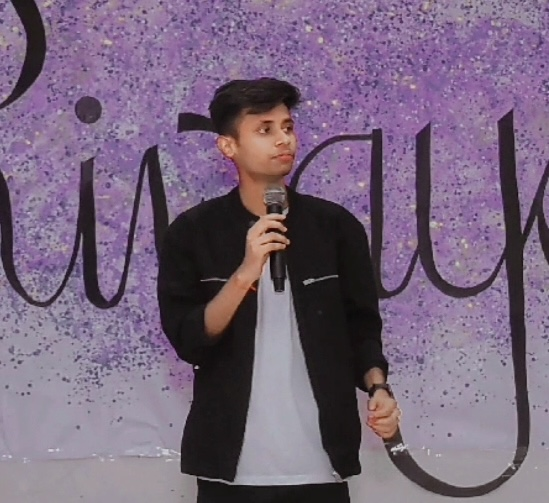

Computer Science | AI Researcher
I am an AI researcher and engineer specializing in multimodal AI and large language model–based systems, with a focus on building models that jointly reason over text, vision, audio, video, and structured data. I graduated Rank 1 with a B.E. (Honors) in Computer Science & Engineering from Panjab University (CGPA: 9.23/10) and have conducted research across six labs in three countries, leading to publications at EMNLP, ECIR, ICDAR, and Elsevier’s Computers & Security. My work spans educational AI, multilingual multimodal NLP, biomedical imaging, and self-supervised learning, including research at Carnegie Mellon University and IIT Kharagpur, where I focused on advancing multimodal and large-scale AI systems. Currently, I work as a Machine Learning Engineer at Recursive Softpro, designing production-grade multimodal RAG systems and multi-agent LLM workflows, bridging research and deployment. My long-term goal is to contribute to next-generation multimodal foundation models, particularly for education and scientific reasoning, to make high-quality learning accessible at scale.
Jan 2025 – Present
Building production-grade AI assistants and retrieval systems that blend multimodal search, orchestration, and observability.
- Designed a multimodal RAG pipeline using CLIP embeddings and ChromaDB to retrieve text, images, audio, and video frames, pairing them with GPT-4o for context-aware answers and tuned latency/accuracy trade-offs.
- Engineered a Swarm-driven multi-agent router with OpenAI function calling, dynamic tool registry, Pinecone-backed knowledge bases, and Django/DRF persistence plus analytics for chat health.
- Built an AI workflow marketplace with a unified LLM layer (OpenAI/Anthropic/Llama), multi-tenant API management, and LangGraph agent templates with evaluation harnesses.
July 2024 – Dec 2024
Enhancing student learning with LLMs that understand long educational videos end-to-end.
- Built a data pipeline combining manual annotation and Gemini 1.5 Flash synthesis to create 4,300+ high-quality Q&A pairs across lecture domains.
- Benchmarked multimodal LLMs (Video-LLaMA, mPLUG-Owl, etc.) across zero/few-shot and fine-tuned settings, evaluating BLEU, ROUGE, METEOR, and qualitative student feedback.
- Co-authored the EMNLP 2025 paper on educational multimodal video question answering.
Sept 2023 – Jul 2024
Self-supervised pipelines for robust 3D Cryo-ET analysis in open-set environments.
- Integrated Momentum Contrast with ViVIT/ViT (inflated weights) for 3D Cryo-ET classification and improved representation quality.
- Designed a 3D processing workflow that boosted performance and training efficiency, achieving 70.28 F1 in open-set settings.
- Contributed experiments and writing for an ICCV 2025 manuscript and a book chapter on feature semantic segmentation.
May 2023 – Sept 2023
The main focus of this project is the development of IndicBART, a multimodal summarization framework that integrates text and image data to produce regionally contextualized summaries in Indian languages. The process involves the following steps:
- Collected a multimodal dataset (Hindi, Tamil, Bengali, Marathi) with paragraphs, summaries, and images from Large Scale Multi-Lingual Multi-Modal Summarization Dataset (M3LS).
- Extended the BART model with a visual-aware encoder to generate regionally contextualized summaries using both text and image data.
- Achieved a ROUGE-1 score of 0.266 on the Hindi dataset and 44.1% image precision using an image pointer for multi-output prediction.
- Work accepted at ICDAR 2024 based on multimodal summarization research with Indian regional languages.
Jan 2023 – May 2023
This project aims to develop an effective pneumonia detection system by combining advanced image analysis techniques, achieving high accuracy in classification. The workflow encompasses the following steps:
- Compiled and preprocessed a Mendeley dataset with three classes (Covid-19, Pneumonia, Normal), applying data augmentation techniques to address overfitting.
- Extracted image features using Vision Transformer (ViT) and ResNet50 models.
- Developed an ensemble model by combining features from both ViT and ResNet50, and used XGBoost for classification, achieving 96.19% accuracy.
- Contributed to writing the results section of the paper, which was accepted at CPAMCS-2023.
Aug 2022 – Jan 2023
This project develops a multimodal framework that combines text and image data to detect complaints in customer reviews. The process involves the following steps:
- Collected a multimodal dataset of product images, customer reviews, and aspects from Amazon website.
- Utilized BERT for text data, and VGG16/ResNet models for visual embedding.
- Developed a multimodal interaction model to learn the relationship between text, image, and product aspects.
- Identified complaint eligibility by analyzing multimodal relationships, with the paper published in ECIR 2023.
Jan 2022 – Aug 2022
Predicting vessel paths and collision risk from noisy AIS streams.
- Cleaned AIS data (SOG, COG, MMSI, etc.) and clustered vessel patterns with DBSCAN/K-Means to remove outliers.
- Built sequence-to-sequence baselines (RNN, LSTM, GRU variants) for trajectory forecasting and risk assessment.
Oct 2021 – Jan 2022
Optimizing concrete strength and durability through data-driven mix modeling.
- Experimented with sand fines, cement, and plasticizer ratios, comparing regression models (MLR, SVR, Decision Trees, ANN) for strength prediction.
- Achieved top accuracy for 7-day and 28-day compressive strength using Decision Tree Regression.
2020 - 2024
Department of Computer Science & Engineering
CGPA: 9.23 / 10
Jan 2022 - Dec 2023
Google Developer Student Club
- Led a 20+ member team to run 10+ machine learning workshops and events, benefiting 500+ students.
- Mentored 10+ technical projects, helping students apply ML models to real-world problems.
Feb 2023 - Jan 2024
National Service Scheme (NSS)
- Coordinated community service projects with 100+ students to address local societal needs.
- Organized health, education, and environmental awareness campaigns reaching 200+ residents.